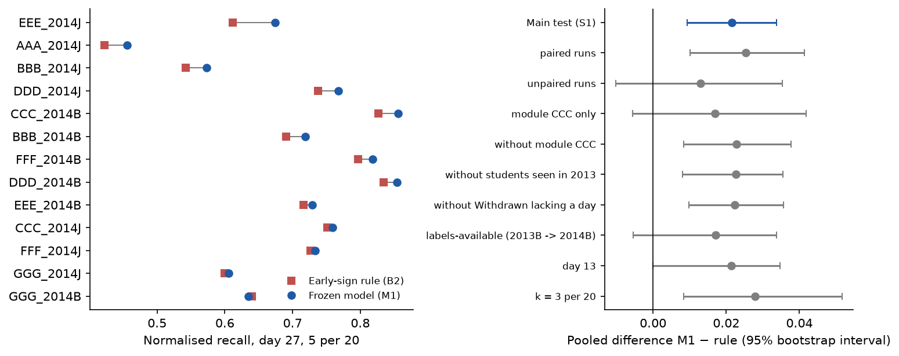
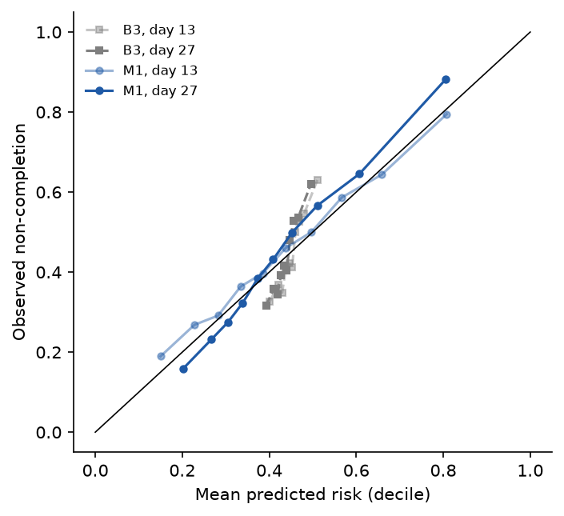
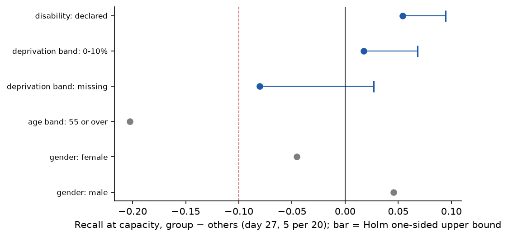
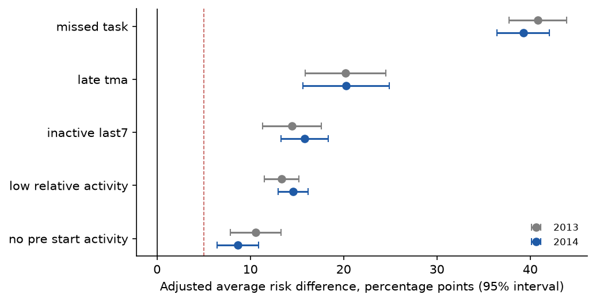

This report is written by src/12_report.py from the CSV files in results/ alone; every number comes from those files. It covers the eight steps of the prototype protocol: development on the 9 runs of 2013, the second freeze, the single test on the 2014 runs, error and fairness analysis, sensitivity analyses and the AQ2 replication.
The prototype tests whether the Level 1 choices hold on data the model never saw. The primary model (M1) is a penalised logistic regression on the primary predictor set; it is compared with three baselines (B1 random list, B2 early-sign rule ranked by number of signs, B3 background-only logistic model) and three challengers (M2 logistic, extended set; M3 and M4 gradient-boosted trees on the primary and extended sets). A challenger replaces M1 only with a gain of at least 0.03 in pooled normalised recall at day 27, k = 5 per 20, and a gain in at least 7 of the 9 development folds. Normalised recall is the number of non-completers on a run's list divided by the most a list of that length can hold, min(k, number of non-completers), pooled over runs. The single gate S1 requires M1's pooled normalised recall on the 2014 runs to exceed the rule's, with the 95% paired two-level bootstrap interval of the difference above 0 and a one-sided sign-flip p-value below 0.05.
The inputs are the Milestone 3 prepared package OULAD-N04-prepared-1.0; every file hash matched its manifest before use. The table gives the development (2013) and test (2014) populations at each cut-off.
| cutoff | dev_enrolments_2013 | dev_noncompleters_2013 | dev_max_attainable_k5 | test_enrolments_2014 | test_noncompleters_2014 |
|---|---|---|---|---|---|
| 13 | 12080 | 5519 | 3032 | 15989 | 7189 |
| 27 | 11811 | 5245 | 2976 | 15724 | 6911 |
In each development fold, training rows of students who also appear in the validation run are removed: 258 rows over the folds at day 13 and 242 at day 27.
The selection rule was applied to the nine leave-one-run-out folds of 2013 (nested leave-one-run-out tuning inside each training set). The table gives each configuration's pooled normalised recall at day 27, k = 5 per 20, its gain over M1 and the folds with a gain.
| config | pooled_normalised_recall_d27_k5 | gain_vs_M1 | folds_with_gain | chosen | reason |
|---|---|---|---|---|---|
| B1 | 0.445 | -0.308 | 0 | no | baseline, not eligible for the choice; gain -0.3079, gain in 0 of 9 folds; |
| B2 | 0.727 | -0.025 | 2 | no | baseline, not eligible for the choice; gain -0.0252, gain in 2 of 9 folds; |
| B3 | 0.571 | -0.182 | 0 | no | baseline, not eligible for the choice; gain -0.1818, gain in 0 of 9 folds; |
| M1 | 0.753 | 0.000 | – | yes | primary model; kept because no challenger met the margin |
| M2 | 0.747 | -0.006 | 2 | no | margin not met (gain -0.0057 < 0.03; gain in 2 of 9 folds < 7) |
| M3 | 0.750 | -0.003 | 4 | no | margin not met (gain -0.0027 < 0.03; gain in 4 of 9 folds < 7) |
| M4 | 0.749 | -0.004 | 2 | no | margin not met (gain -0.0037 < 0.03; gain in 2 of 9 folds < 7) |
The rule chose M1. These fold results serve the choice only and are not an estimate of performance in use.
The 2014 outcomes were opened once, at 2026-11-09T17:55:05Z (UTC), after both frozen model files were re-verified against their recorded SHA-256 values; the access time and hashes were written to the experiment log before any 2014 row was read.
The table lists the scored model files and their hashes; B3 was refitted on all 2013 runs with the M1 procedure before the access.
| config | parameter_file | model_sha256 |
|---|---|---|
| M1 | models/frozen_M1_d13.joblib | 5eeb1b3234bee08c6173eb55499c846235092c1cc25e44dac8a2f1b2a82c0fd1 |
| M1 | models/frozen_M1_d27.joblib | 49f462fbeb6d1631ecf233cc46a370da0947365f4be48a18c125aa10a86b9a96 |
| B3 | models/fitted_B3_d13.joblib | a871b9295b4c6a7e414458318cd803b4dab7e520b04efdd8316d265dedcdf8b6 |
| B3 | models/fitted_B3_d27.joblib | 2268df1b239ef2439d0e6a5227d3649d93cf2a274e6929a3712651bbbb5afe31 |
S1, the single gate: on all 13 test runs at day 27, k = 5 per 20, M1's pooled normalised recall is 0.726 against 0.704 for the rule-ranked list, a difference of 0.021 (95% paired two-level bootstrap interval 0.009 to 0.034; one-sided sign-flip p = 2.4e-04). M1 wins 12 runs, ties 0 and loses 1; the unweighted mean of the per-run differences is 0.022. Verdict: S1 met. In counts, M1's lists hold 2871 non-completers and the rule's 2786, out of at most 3955.
M1's list holds fewer non-completers than the rule's in 1 run(s): GGG_2014B.
S2 (reported, not a gate): M1's precision at capacity is 72.6% against a base rate of 44.0% and an attainable maximum of 100.0%.
S3 (condition for showing probabilities): calibration-in-the-large 0.058 (bounds −0.2 to 0.2) and slope 1.311 (bounds 0.8 to 1.2): not met, so tutors see ranks and reasons only.
Unfavourable result: S3 is not met. A slope of 1.311, above 1, means the predicted risks are less extreme than the observed outcomes (too close to the average), which fits the strong shrinkage the tuning chose; the ranking, and so the lists, are unaffected.
Figure 1 shows, for each 2014 run, the normalised recall of M1 and of the rule at the main operating point, and the pooled difference with its interval for the main test and every sensitivity variant.

The table gives precision at capacity with its base rate and attainable maximum, and the within-run PR-AUC and ROC-AUC averaged over the 13 test runs, per configuration, cut-off and list length.
| config | cutoff | k | precision | base_rate | max_attainable_precision | pr_auc | roc_auc_within_run |
|---|---|---|---|---|---|---|---|
| B1 | 13 | 3 | 0.451 | 0.450 | 1.000 | – | 0.501 |
| B1 | 13 | 5 | 0.450 | 0.450 | 1.000 | – | 0.501 |
| B2 | 13 | 3 | 0.705 | 0.450 | 1.000 | 0.606 | 0.679 |
| B2 | 13 | 5 | 0.667 | 0.450 | 1.000 | 0.606 | 0.679 |
| B3 | 13 | 3 | 0.608 | 0.450 | 1.000 | 0.530 | 0.605 |
| B3 | 13 | 5 | 0.581 | 0.450 | 1.000 | 0.530 | 0.605 |
| M1 | 13 | 3 | 0.743 | 0.450 | 1.000 | 0.638 | 0.700 |
| M1 | 13 | 5 | 0.688 | 0.450 | 1.000 | 0.638 | 0.700 |
| B1 | 27 | 3 | 0.440 | 0.440 | 1.000 | – | 0.500 |
| B1 | 27 | 5 | 0.440 | 0.440 | 1.000 | – | 0.500 |
| B2 | 27 | 3 | 0.780 | 0.440 | 1.000 | 0.660 | 0.711 |
| B2 | 27 | 5 | 0.704 | 0.440 | 1.000 | 0.660 | 0.711 |
| B3 | 27 | 3 | 0.599 | 0.440 | 1.000 | 0.522 | 0.605 |
| B3 | 27 | 5 | 0.572 | 0.440 | 1.000 | 0.522 | 0.605 |
| M1 | 27 | 3 | 0.807 | 0.440 | 1.000 | 0.686 | 0.732 |
| M1 | 27 | 5 | 0.726 | 0.440 | 1.000 | 0.686 | 0.732 |
Net benefit (context only, results/net_benefit.csv): at day 27, M1 has a higher net benefit than contacting everyone, no one and the rule-flagged students at 17 of 19 thresholds between 0.05 and 0.95; it does not at 0.10, 0.15.
The table gives calibration-in-the-large, calibration slope and Brier score (with the Brier score of predicting the test base rate) for M1 and B3; only M1 at day 27 is judged against S3.
| config | cutoff | citl | slope | s3_verdict | brier | brier_base_rate |
|---|---|---|---|---|---|---|
| M1 | 13 | 0.071 | 0.882 | descriptive: met | 0.216 | 0.247 |
| B3 | 13 | -0.006 | 3.093 | descriptive: not met | 0.243 | 0.247 |
| M1 | 27 | 0.058 | 1.311 | S3: not met | 0.205 | 0.246 |
| B3 | 27 | 0.003 | 3.286 | descriptive: not met | 0.242 | 0.246 |
Figure 2 plots observed against predicted risk by decile of predicted risk; points on the diagonal are well calibrated.

The table gives, at day 27 and k = 5 per 20, each audit group's recall at capacity against the other students, the difference and, for the three confirmatory groups, the Holm-adjusted one-sided 95% upper bound. A group is flagged when the gap is below −10 points and the bound lies below 0.
| group | cutoff | k | n | n_noncompleters | recall_group | recall_others | difference | holm_ci_high | flagged |
|---|---|---|---|---|---|---|---|---|---|
| disability: declared | 27 | 5 | 1488 | 803 | 0.463 | 0.409 | 0.054 | 0.095 | no |
| deprivation band: 0-10% | 27 | 5 | 1486 | 787 | 0.431 | 0.413 | 0.017 | 0.068 | no |
| deprivation band: missing | 27 | 5 | 610 | 181 | 0.337 | 0.418 | -0.081 | 0.027 | no |
| age band: 55 or over | 27 | 5 | 118 | 42 | 0.214 | 0.417 | -0.202 | – | insufficient data, not cleared |
| gender: female | 27 | 5 | 6666 | 2750 | 0.388 | 0.434 | -0.046 | – | descriptive |
| gender: male | 27 | 5 | 9058 | 4161 | 0.434 | 0.388 | 0.046 | – | descriptive |
Not flagged but below the other students: deprivation band: missing (-8.1 points, upper bound +2.7 points).
Flagged for review: no confirmatory group. age band: 55 or over: insufficient data, not cleared (point gap -0.202).
Figure 3 shows the recall gap of each audit group at the main operating point.

The table repeats the S1 statistics for each variant; none can change the S1 verdict.
| variant | cutoff | k | pooled_nr_model | pooled_nr_rule | difference | boot_ci_low | boot_ci_high | signflip_p | wins | ties | losses | mean_per_run_difference | verdict | n_runs | n_enrolments |
|---|---|---|---|---|---|---|---|---|---|---|---|---|---|---|---|
| paired runs | 27 | 5 | 0.708 | 0.683 | 0.025 | 0.010 | 0.041 | 0.0020 | 9 | 0 | 0 | 0.026 | would meet S1 (sensitivity only) | 9 | 10801 |
| unpaired runs | 27 | 5 | 0.765 | 0.752 | 0.013 | -0.010 | 0.035 | 0.1250 | 3 | 0 | 1 | 0.011 | would not meet S1 (sensitivity only) | 4 | 4923 |
| module CCC only | 27 | 5 | 0.800 | 0.783 | 0.017 | -0.006 | 0.042 | 0.2500 | 2 | 0 | 0 | 0.019 | would not meet S1 (sensitivity only) | 2 | 3521 |
| without module CCC | 27 | 5 | 0.705 | 0.682 | 0.023 | 0.008 | 0.038 | 9.8e-04 | 10 | 0 | 1 | 0.022 | would meet S1 (sensitivity only) | 11 | 12203 |
| without students seen in 2013 | 27 | 5 | 0.704 | 0.681 | 0.023 | 0.008 | 0.035 | 9.8e-04 | 12 | 0 | 1 | 0.023 | would meet S1 (sensitivity only) | 13 | 14138 |
| without Withdrawn lacking a day | 27 | 5 | 0.719 | 0.696 | 0.022 | 0.010 | 0.036 | 2.4e-04 | 12 | 0 | 1 | 0.022 | would meet S1 (sensitivity only) | 13 | 15634 |
| labels-available (2013B -> 2014B) | 27 | 5 | 0.779 | 0.762 | 0.017 | -0.005 | 0.034 | 0.0312 | 5 | 0 | 1 | 0.018 | would not meet S1 (sensitivity only) | 6 | 6510 |
| day 13 | 13 | 5 | 0.688 | 0.667 | 0.021 | 0.000 | 0.035 | 0.0195 | 9 | 1 | 3 | 0.019 | would not meet S1 (sensitivity only) | 13 | 15989 |
| k = 3 per 20 | 27 | 3 | 0.807 | 0.780 | 0.028 | 0.008 | 0.052 | 0.0154 | 10 | 0 | 3 | 0.029 | would meet S1 (sensitivity only) | 13 | 15724 |
Variants whose S1 reading differs from the main test: unpaired runs, module CCC only, labels-available (2013B -> 2014B), day 13.
The table summarises the M1-ranked lists of the 13 test runs per cut-off and list length, pooled: recall, precision, the C13 check that precision is at least 50%, lift, overlap with the rule's list and the Fail and Withdrawn students among the listed non-completers.
| cutoff | k | n_enrolments | n_noncompleters | list_length | noncompleters_on_list | recall | precision | precision_ge_50 | lift | normalised_recall | max_attainable | overlap_with_rule_list | listed_fail | listed_withdrawn |
|---|---|---|---|---|---|---|---|---|---|---|---|---|---|---|
| 13 | 3 | 15989 | 7189 | 2418 | 1797 | 0.250 | 0.743 | yes | 1.653 | 0.743 | 2418 | 0.688 | 1049 | 748 |
| 13 | 5 | 15989 | 7189 | 4030 | 2772 | 0.386 | 0.688 | yes | 1.530 | 0.688 | 4030 | 0.732 | 1570 | 1202 |
| 27 | 3 | 15724 | 6911 | 2373 | 1916 | 0.277 | 0.807 | yes | 1.837 | 0.807 | 2373 | 0.793 | 1119 | 797 |
| 27 | 5 | 15724 | 6911 | 3955 | 2871 | 0.415 | 0.726 | yes | 1.652 | 0.726 | 3955 | 0.801 | 1652 | 1219 |
Unfavourable result: the C13 limit of 50% precision is not reached in every run.
Runs whose day-27 list of 5 per 20 has precision below 50%: AAA_2014J (45.6%). Each listed student carries up to three contributing predictors (coefficient × standardised value); the per-student lists are in results/aq4_lists/.
The table compares the adjusted average risk difference (percentage points) of each early sign in 2013 and 2014, re-estimated with the same model only after the AQ3 test (Change Log C14); module-specific estimates, CCC included, are in results/aq2_replication.csv.
| sign | estimate_2013 | ci_2013 | verdict_2013 | estimate_2014 | ci_2014 | verdict_2014 | modules_same_direction_2014 |
|---|---|---|---|---|---|---|---|
| missed_task | 40.83 | [37.73, 43.93] | consistent association | 39.26 | [36.45, 42.08] | consistent association | 5/5 |
| late_tma | 20.2 | [15.87, 24.52] | consistent association | 20.25 | [15.64, 24.87] | consistent association | 3/4 |
| inactive_last7 | 14.46 | [11.3, 17.62] | consistent association | 15.82 | [13.3, 18.35] | consistent association | 7/7 |
| low_relative_activity | 13.36 | [11.48, 15.23] | consistent association | 14.6 | [12.98, 16.22] | consistent association | 7/7 |
| no_pre_start_activity | 10.56 | [7.84, 13.29] | consistent association | 8.65 | [6.44, 10.87] | consistent association | 7/7 |
Signs whose verdict differs between 2013 and 2014: none.
Figure 4 compares the adjusted risk difference of each sign between the two years.

The contract and the Milestone 4 report leave these implementation details open; each was fixed as below.
venv/bin/pip install -r reports/milestone-4/package/requirements.txt bash reports/milestone-4/package/src/run_dev.sh # phase 1 (refused once the test is accessed) bash reports/milestone-4/package/src/run_test.sh # phase 2: 06 --reproduce, 07-12, tests